5-Minute Quick-Start Checklist
Complete these five steps and you will have your first AI evaluation in hand. Most people finish in under five minutes.
- ~30 sec
- ~1 min
- ~30 sec
- ~1 min
- ~2 min
How It Works — The Basic Workflow
Every job search in Career-Ops follows the same loop. Here it is from start to finish:
Sign in
Enter your email and password on the login screen. You land on the Dashboard automatically.
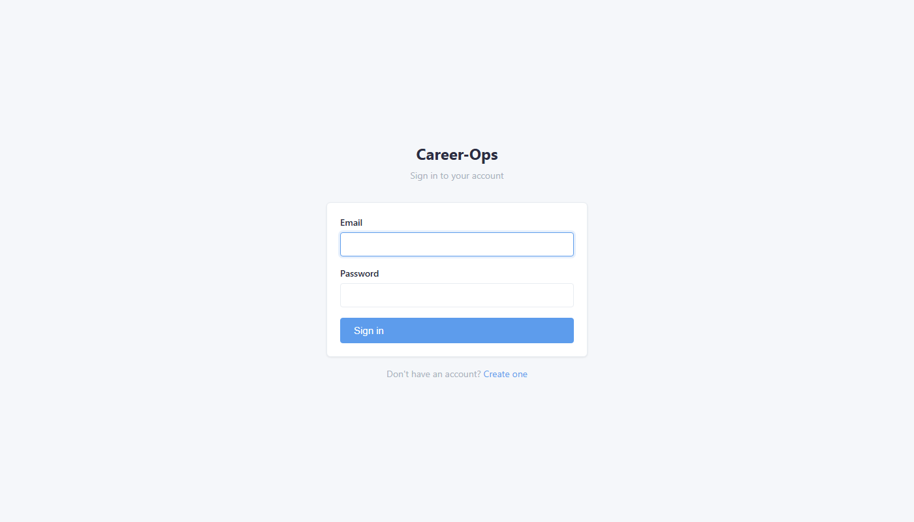
Set up your Profile
Before evaluating any job, go to Profile and fill in your Target Roles and Compensation tabs. The AI reads these every time it scores a job. Without them, scores will be inaccurate.
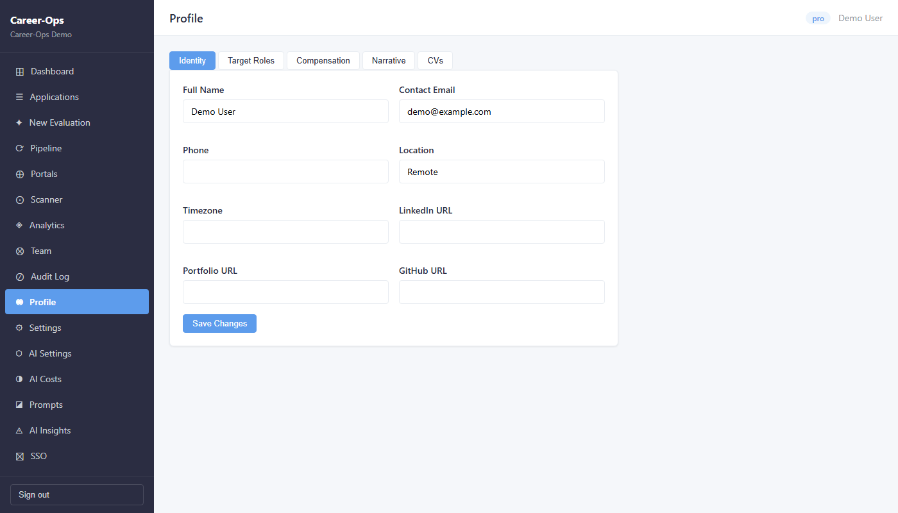
Evaluate a job
Click New Evaluation in the sidebar. Paste the job posting URL (or the full job description text if you don't have a URL) and click Evaluate.
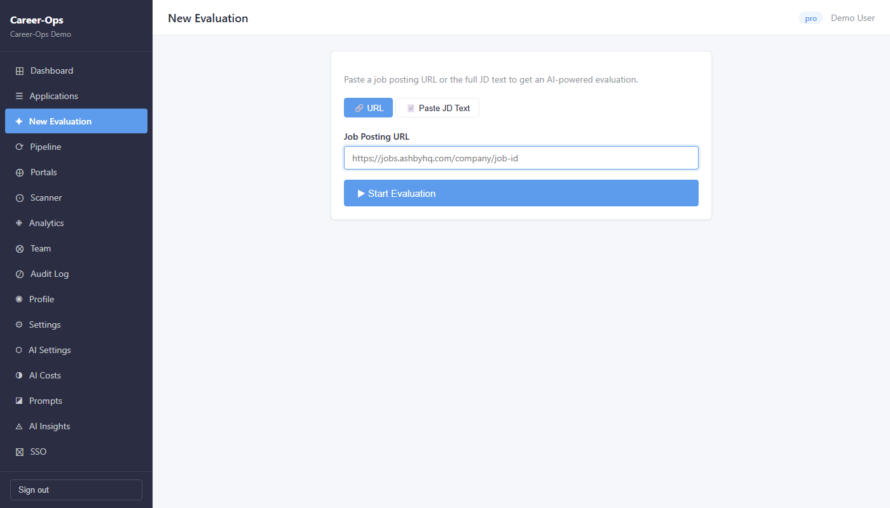
Read the score and report
When the evaluation finishes, open Applications in the sidebar. Click the new row to open the full report.
The score is out of 5.0 and covers six areas: role fit, compensation match, company quality, location/remote policy, growth potential, and legitimacy.
Track your application
The job appears automatically in Applications with status Evaluated. As you progress through the hiring process, update the status: Applied → Interview → Offer (or Rejected / Discarded). Your dashboard stats update in real time.
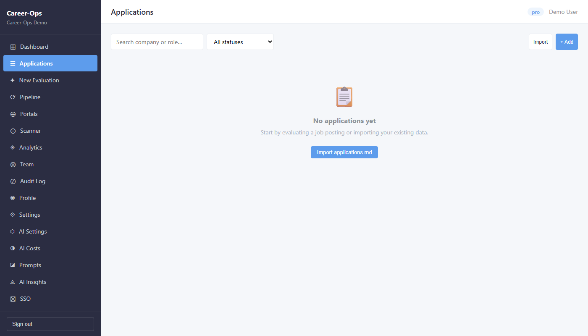
Features & When to Use Them
Each feature below explains what it does, when to use it, and exactly what to click — step by step. You don't need all of them on day one, but read through so you know what's available.
Dashboard
The Dashboard is your home screen. It shows live summary numbers — how many jobs you have evaluated, how many applications are active, your average score, and how many interviews you have lined up. You don't type anything here; it just shows you where you stand.
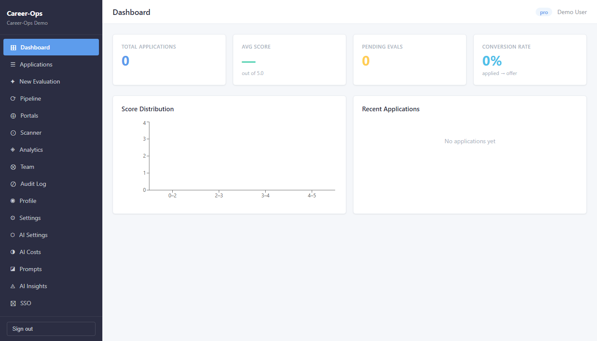
New Evaluation
This is the core feature. You give Career-Ops a job posting — either as a URL or by pasting the text — and the AI reads it, compares it against everything in your Profile, and produces a detailed report with a score out of 5.0. The report tells you exactly where the job is a good fit and where the gaps are.
- Click New Evaluation in the left sidebar.
- If you have a URL (from LinkedIn, a company website, or a job board): paste it into the Job URL field.
- If you only have the job description text (no URL): click the Paste Text tab and paste the full description there instead.
- Optionally add a note about the company or why you are interested — this gets saved with the report.
- Click the blue Evaluate button.
- The page will show a spinner and a status message. Do not close the tab — wait 30–90 seconds.
- When the evaluation finishes, you are taken to the report. Read the score, the six dimension ratings, and the gap analysis.
- The job is automatically added to your Applications list with status Evaluated.
Applications
Applications is your master tracker. Every time you run an evaluation, the job appears here automatically. You then update the status as you move through the hiring process — from Evaluated, to Applied, to Interview, to Offer or Rejected. This is also where you reopen past reports.
- Click Applications in the left sidebar to open your list.
- Each row shows: Company, Role, Score, Status, and Date. Click any row to open the full evaluation report.
- To update a status (e.g. after you applied): click the row, find the Status field, and change it to Applied.
- Continue updating as things progress: Applied → Interview → Offer or Applied → Rejected.
- Use the Search bar at the top to find a specific company quickly.
- Use the Filter by Status dropdown to see only active applications, or only rejections.
Pipeline
The Pipeline is a holding area. When you are browsing LinkedIn or a job board and find something interesting but don't have time to evaluate it right now, paste the URL into the Pipeline. Later, when you sit down to do a proper review, you can process all saved URLs at once instead of opening them one by one.
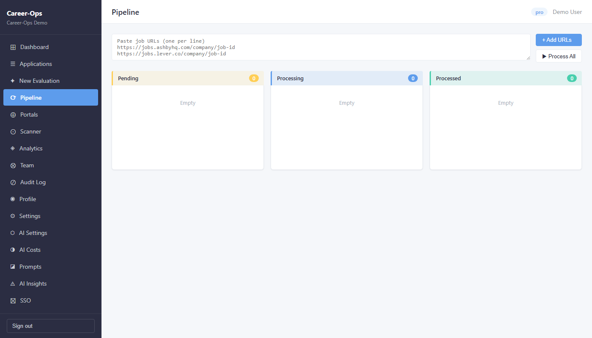
- When you spot an interesting job but don't want to evaluate it right now, copy the job URL.
- Click Pipeline in the sidebar.
- Paste the URL into the input field at the top and click Add. The job appears in the list.
- Repeat for as many jobs as you want to save.
- When you are ready to evaluate them, click Process All. Each URL is sent to the evaluation queue one by one.
- Check Applications a few minutes later — all processed jobs will appear there with their scores.
Portals
Portals is the configuration screen for the Scanner. It holds a list of companies (with their job portal URLs) and a set of keyword filters. You set this up once, and then the Scanner uses it every time it runs. Think of it as telling Career-Ops: "watch these 20 companies and alert me if they post anything matching these titles."
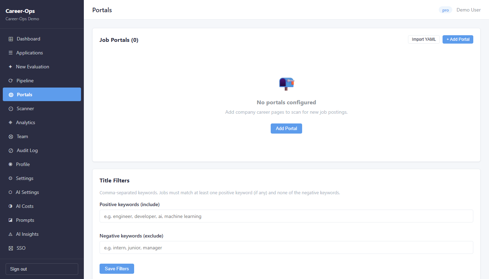
- Click Portals in the sidebar.
- You will see a pre-loaded list of companies. Scroll through and toggle Enable on the ones you actually care about. Toggle off companies that are not relevant to your search.
- For each enabled portal, check the Title Filter column. This is the keyword the Scanner will use to match job titles. Make sure it reflects what you are looking for — e.g. "Engineer", "Product Manager", "Data Scientist".
- To add a company that isn't listed: click + Add Portal, enter the company name and their careers page URL, and set the title filter.
- Click Save when done.
Scanner
The Scanner hits the job portal APIs of every company in your Portals list and checks for new openings that match your title filters. It does this without using any AI — it directly queries Greenhouse, Lever, Ashby, and other ATS APIs. Results appear instantly. You then decide which ones to evaluate.
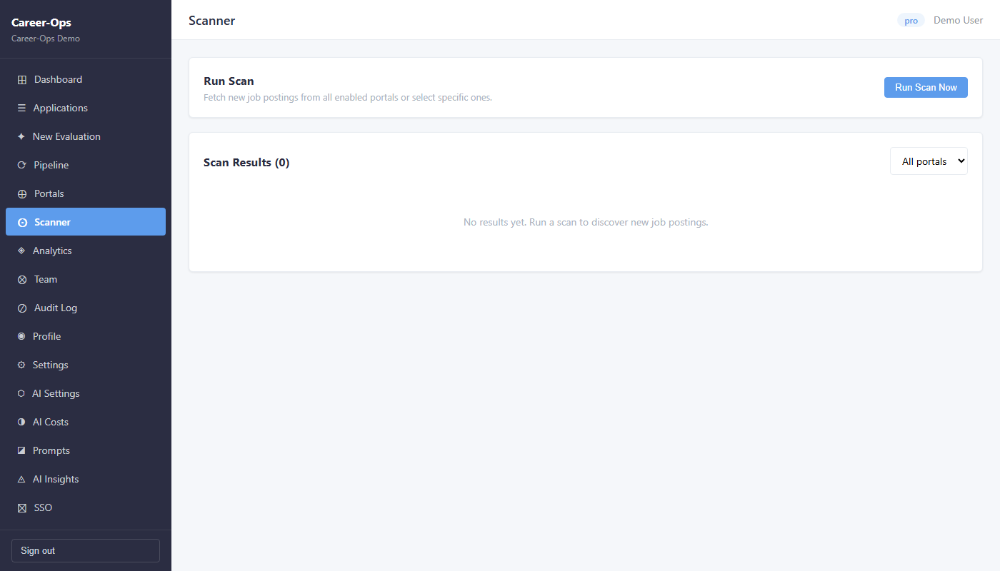
- Make sure your Portals are configured first (see above). The Scanner will only check enabled portals.
- Click Scanner in the sidebar.
- Click the Scan Now button. The scan usually completes in 10–30 seconds.
- Results appear in a list below the button. Each result shows the company, job title, location, and a link to the original posting.
- For each result you are interested in, click Evaluate to send it straight to AI evaluation, or Save to Pipeline to review it later.
- Jobs you have already seen are marked as Previously seen — the Scanner remembers what it showed you and won't show duplicates.
Analytics
Analytics turns your Applications data into charts. You can see your pipeline funnel (how many jobs move from Evaluated to Applied to Interview), your score distribution, rejection patterns, and which companies or role types are scoring highest. It helps you answer the question: "Am I targeting the right kinds of jobs?"
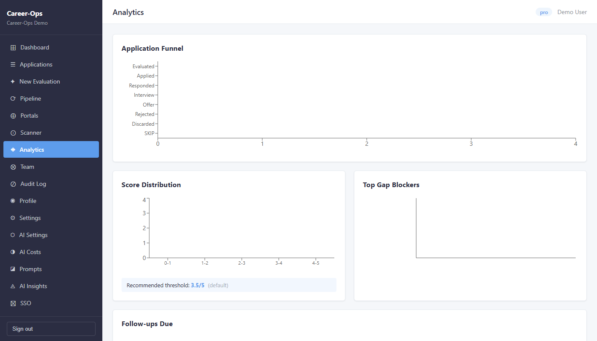
- Click Analytics in the sidebar.
- The Funnel chart at the top shows how many jobs are in each status — this tells you if you are applying to enough jobs or if too many are stalling at Evaluated.
- The Score Distribution chart shows the spread of your scores. If most scores are below 3.5, your target role keywords or compensation range may need adjusting.
- The Rejection Patterns section (visible once you have some rejections) shows whether rejections cluster by company type, role level, or location.
- Use the date range filter at the top to focus on a specific time period.
Interview Prep
Interview Prep is a personal story bank. A STAR story is a structured way to answer behavioural interview questions ("Tell me about a time when..."). You write the story once — Situation, Task, Action, Result — and store it here. Before each interview you review the relevant stories instead of trying to recall them under pressure.
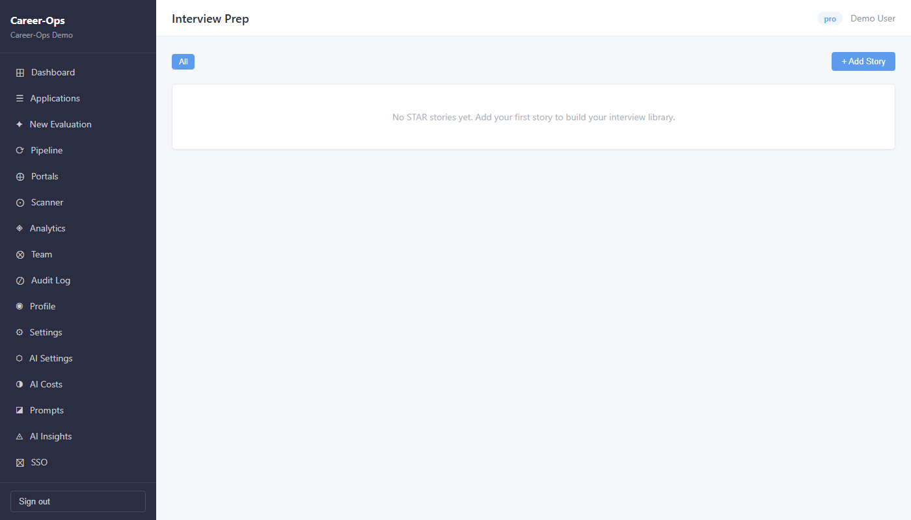
- Click Interview Prep in the sidebar.
- Click + Add Story.
- Give the story a title that describes the situation (e.g. "Led migration to microservices under 3-month deadline").
- Fill in the four STAR fields: Situation (context), Task (what you had to do), Action (exactly what you did), Result (outcome, ideally with a number).
- Add a Competency tag — e.g. Leadership, Problem Solving, Communication. This helps you filter later.
- Click Save. Repeat for each story.
- Aim for 8–12 stories covering different competencies. Good coverage: 2–3 leadership stories, 2–3 technical problem-solving, 1–2 conflict/stakeholder, 1–2 delivery under pressure.
Profile
Your Profile is what the AI reads before scoring any job. It contains your target roles, compensation expectations, location preferences, and a narrative about your strengths. The more complete and accurate your Profile, the more accurate your evaluation scores will be.
- Click Profile in the sidebar (usually near the bottom, under your name).
- Identity tab: Enter your full name, current location, and years of experience. This gives the AI context about who you are.
- Target Roles tab: Click + Add Role and type the job titles you are actively targeting. Add multiple — e.g. "Senior Software Engineer", "Staff Engineer", "Engineering Lead". These are compared directly against job titles in every evaluation.
- Compensation tab: Set your minimum and target salary. Enter the currency and whether these are annual figures. The AI will flag jobs that pay below your minimum as a compensation mismatch.
- Narrative tab: Write 2–3 sentences about your professional superpower — the thing you do better than most candidates. Also list your must-have requirements (e.g. "fully remote", "no more than 10% travel"). The AI uses this when assessing role fit.
- Click Save on each tab after filling it in.
Team
Team lets you add other people to your Career-Ops workspace. A collaborator can view your evaluations and applications, leave comments, and help you decide which jobs to prioritise. You stay in control — you choose what access level each person gets.
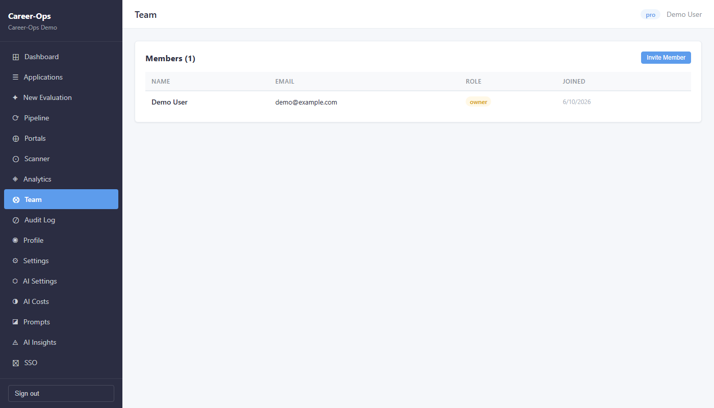
- Click Team in the sidebar.
- Click Invite Member.
- Enter the person's email address.
- Choose their role: Viewer (can only read, not change anything) or Collaborator (can add comments and suggestions).
- Click Send Invite. They will receive an email with a link to join your workspace.
- Once they accept, they appear in the member list and can access your Applications and evaluations.
Settings
Settings is where you manage the administrative side of your account — your subscription plan, monthly usage, organisation name, and API keys if you are integrating Career-Ops with other tools. Most users only visit Settings once during setup and occasionally to check quota.
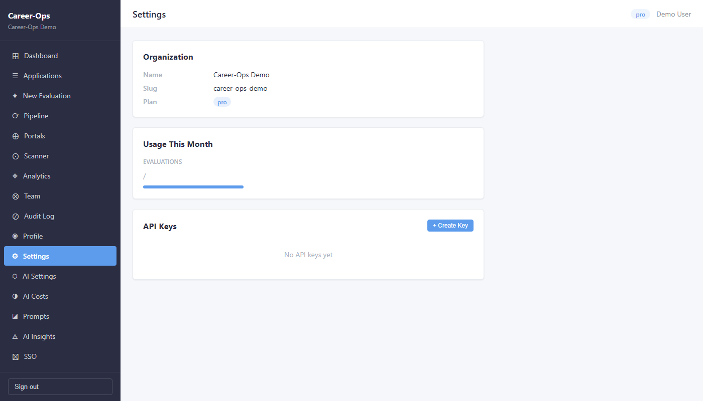
- Click Settings in the sidebar (at the very bottom).
- Check the Usage section to see how many evaluations you have used this month and how many remain in your plan.
- To create an API key (for developers): click API Keys → Create New Key, give it a name, and copy the key — it is shown only once.
- To update your organisation name or billing email: edit the fields in the Organisation section and click Save.
- To change your plan: click Upgrade Plan or contact support.
Most Common Actions
Evaluating a job from LinkedIn or a job board
Copy the job posting URL → click New Evaluation in the sidebar → paste the URL → click Evaluate → wait ~60 seconds → open the result in Applications.
Evaluating a job when you only have the description (no URL)
Click New Evaluation → switch to the Paste Text tab → paste the full job description → click Evaluate.
Saving jobs to review later
Go to Pipeline → paste the URL → it will sit there until you click Process All. Good for when you are browsing and want to batch-evaluate later.
Finding new jobs without searching manually
Go to Portals and make sure your target companies are listed and enabled. Then go to Scanner and click Scan Now. New openings matching your title filters will appear — send any to the Pipeline or straight to Evaluation.
Updating an application status
Go to Applications → find the row → click it to open → change the status (e.g., Applied, Interview, Rejected). Status changes appear in the Dashboard stats immediately.
Preparing for an interview
Go to Interview Prep → click + Add Story → write out a STAR story from your experience. Aim for 8–12 stories covering different competencies. Before each interview, review the relevant stories.
Important Rules, Limits & Best Practices
Monthly usage limits (Pro plan)
Each AI evaluation counts against your monthly quota. Check Settings to see how many you have used and how many remain. The Scanner, Pipeline, and Applications tracker do not consume quota.
Each job is evaluated once
Submitting the same URL a second time creates a new evaluation and uses a credit. Before re-evaluating, check if the job is already in your Applications list.
Profile updates affect future evaluations only
Changing your Target Roles or Compensation will not re-score existing applications. If you significantly update your profile, you may want to re-evaluate key jobs.
Never submit before reviewing
Career-Ops can draft applications and fill forms, but it will always stop before clicking Submit. You make the final call on every application.
Troubleshooting Common Problems
localhost:5173 and try again. If you are the demo user, the credentials are demo@example.com / demo1234. If you are on a real account, use the Create one link on the login page to check your registration.Support & Resources
What to Do Next
You've completed the quick-start. Here are the best next steps depending on where you are in your search: